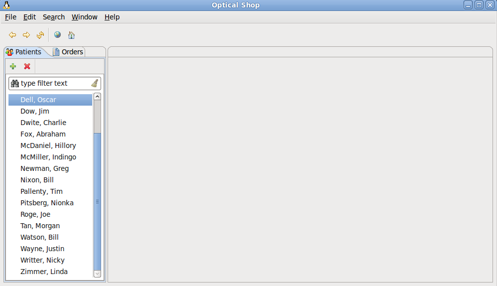
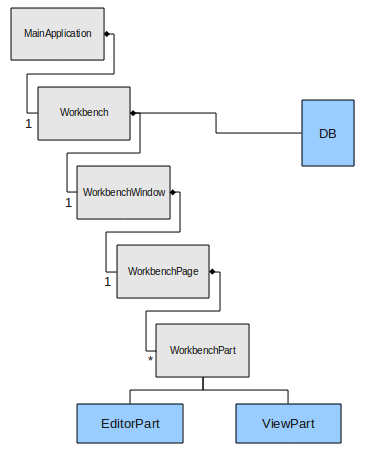
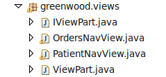
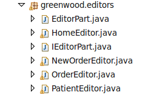
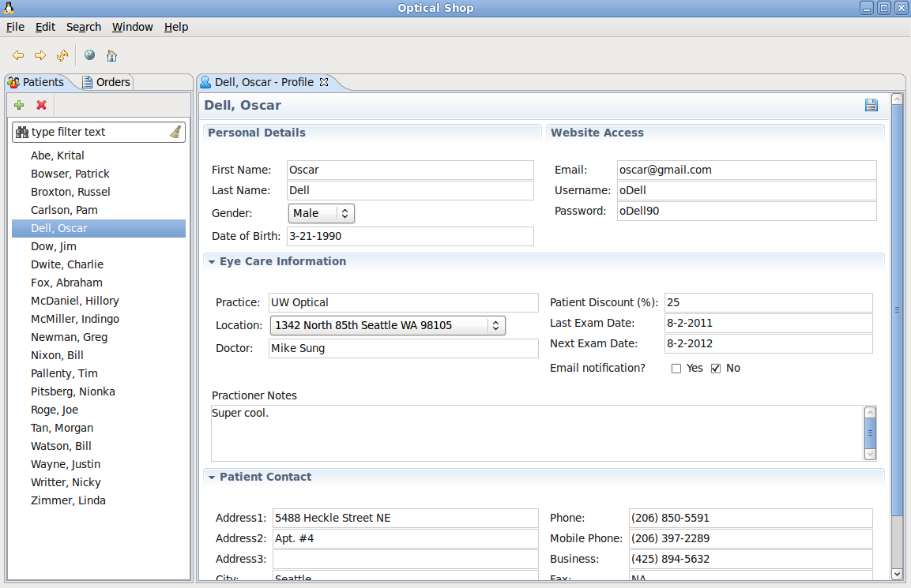
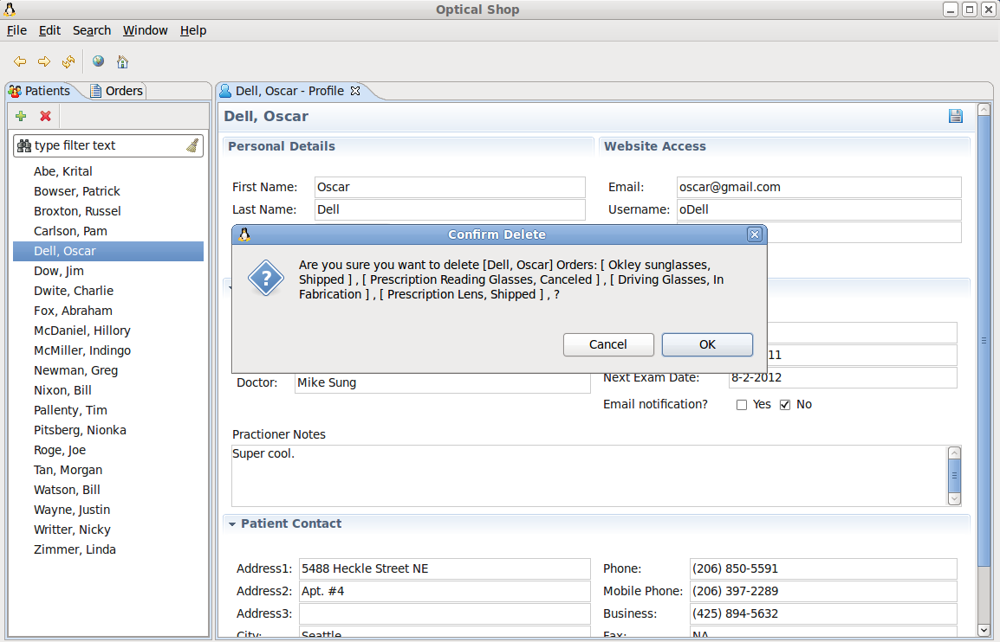
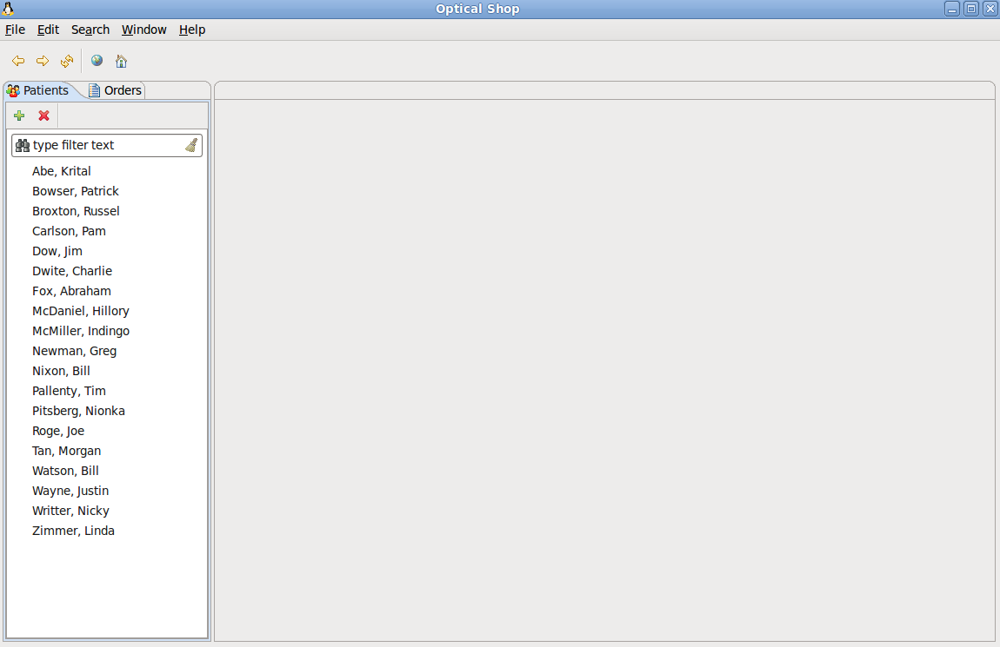
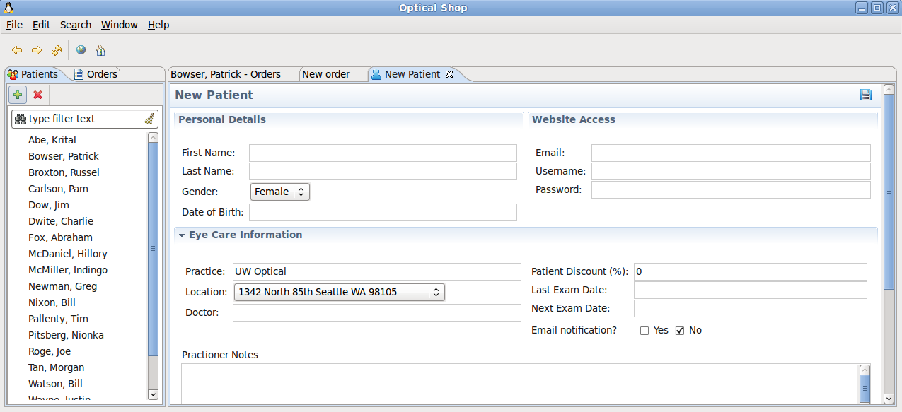
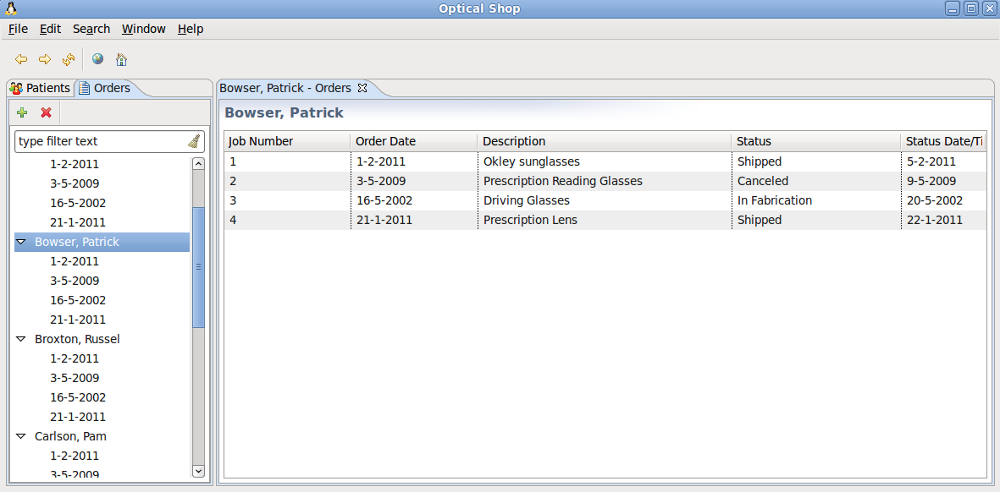
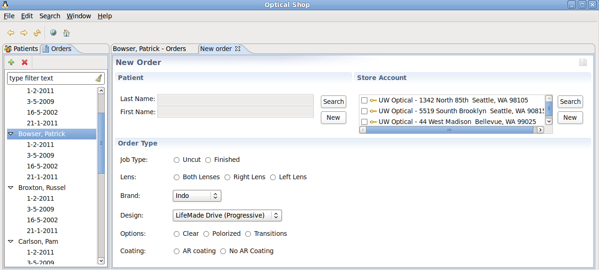

Java GUI Development using SWT, JFace, and JDBC
Summary
JavaTM has strong support for building functionality-rich desktop applications. Using Java's robust API
combined with other third-party libraries such as SWT and JFace, it can be leveraged to build sophisticated business software solutions.
This article describes the techniques I used to build a practice management software solution for an optical shop.
It demonstrates the use JDBC to provide persistence, and connects to an Apache Derby database server.
By John Steele, UW Bothell (steelejr@uw.edu)
Summer, 2011
Introduction
This article describes the techniques I used to build a practice management software solution for an optical shop. I used an optical
shop example because I have noticed that there are still many optical shops out there that are paper-based and would benefit greatly
by converting over to an application similar to the one described in this article. During the development of this application I tried
to not use API's other than those shipped with Java's JDK, SWT, and JFace. I chose SWT and JFace because they are the libraries that
are used to build the GIU for the Eclipse IDE. I have a lot of interest in building plug-ins for Eclipse in the future, so I thought
this application would serve as a good building block. I also recommend other people who are interested in contributing to Eclipse to
build an application like this because it really does help separate what is part of Eclipse and what is not. Figure 1 shows a view of
the application upon startup:

Figure 1: The application upon startup.
Upon the applications first startup, the database is created, and a large data structure is built with dummy data where it is then
loaded into the Apache Derby server database. From that point on when the application is started up, it will recognize that the
database and tables already exist and will not take go through the lengthy process of building the data structures, loading it into
the database, and then querying it right back out to display in the UI. Needless to say, the first time the application starts up it
takes quite a while until the GIU actually appears. The startup delay could definitely be reduced by using a separate thread for
the the database.
Application Internals and Overview
The design of the application's internals was highly influenced by that of the Eclipse IDE. I did not fully leverage the ability
to have multiple pages (perspectives). Although, the framework is in place, so maintaining an additional list of WorkbenchPages
would be possible. Figure 2 shows the overall hierarchy view of the internals for the optical shop application:

Figure 2: The application class hierarchy.
MainApplcation
The MainApplication class is where main(...) resides. This is where the Display and Shell objects are created. This is also
where the application loop is. In a nutshell, the Display object polls a queue of operating system events, and when an event comes
in the display forwards the event to the Shell, and it gets passed down to the object who registered the event. When there are no
events to process the Display sleeps (essentially polls).
Workbench
The Workbench is a singleton, and is responsible for managing the database, images, and the workbench window. The Workbench itself
does not make connections to a the database and handle persistence, this is done by a helper class DatabaseManager. But the
DatabaseManager is owned by the Workbench. Similarly, the Workbench owns a helper class that is responsible for creating
and handling the life cycle of images. The singleton instance of the Workbench is accessible by other classes so that they
can get access to images and the database via Workbench.getInstance().get...();
WorkbenchWindow
The WorkbenchWindow is responsible for the trim widgets around the GUI. More specifically, the menu bar and tool bar. Although I could
have used the JFace built in MenuManager and ToolBarManager I didn't. Instead I implemented my own, so I could really understand
the process of creating the MenuItems and adding them to the toolbar. The toolbar and menubar have minimal functionality. For the time
being they are really there just for the looks. I had originally planned for all kinds of spectacular features, but those ideas went
right out the window once I started dealing with the complications of the core functionality. If I had time, here's a list of features
I would have liked to have added:
- A wizard enabling the user to switch databases, and even database servers.
- A way to view all the data in the database via Excel spread-sheets, yes this is possible.
- Enable printing of various forms, and even generating things like shipping labels, expired prescriptions, etc.
- Browser support. Although you see a browser button in the toolbar it does not work properly. This would be nice to have
as it would eliminate the need for the client to have both a browser and the optical shop open simultaneously.
- The home button should bring the user to a main dash board. Perhaps here we could build graphs, show statistics, and give
quick access to the applications core functionality. We could also have it hooked up to the Internet so if this were a real
product we could advertise our new products in small area of the dashboard.
- A perspective bar. This would open the door for perspectives managing different domains such as financial, employee management,
and inventory management.
WorkbenchPage
The WorkbenchPage maintains the list of open editors so that the same patient is not being edited in two different editors. This gives
some synchronization support, although there is currently very little synchronization. As mentioned, a list is maintained with all
the open editors, so when user double-clicks on a person to open, the list is first traversed to see if that patient is already open,
same thing with the patient orders. If it is already open, focus is given to that editor instead of opening an entirely new editor.
ViewPart
ViewPart extends the abstract class WorkbenchPart. A WorkbenchPart is either a view or an editor. A view displays information. In our
case they display patients and orders. An editor provides editing support, persistence, and it could also provide undo/redo support although
I do not have that implemented in the optical application. So a ViewPart displays information (patients or orders although not limited to
these objects). I have also implemented a filtered search box at the top of each of the ViewParts. As the user types in text, a filter is
used to parse the label names within the trees, and if the pattern matches they stay in the tree, and if they do not match the patter then
the objects are removed (temporarily from the tree). I did not use the built in filtered tree provided by JFace either. I implemented it
using a standard text box, where I extract the text upon KeyRelease, call the pattern filter, and then refresh the tree. Figure 3 shows the
package containing all the views.

Figure 23: The views package.
EditorPart
EditorParts provide editing support for the the patients and orders. The patient and order tree views have a double-click listener attached
to them, so when that event is triggered the patient or order is opened up in an editor. Of course if the patient or order is already open
in an editor then that editor is given focus. There are a few classes that subclass Editor part which can be identified in in figure 4.
When an editor is opened the object being opened (i.e., the patient or order) based off the selection in the tree is evaluated. If the
object is null then that signals the editor that a new patient or a new order is being created. Otherwise, if the object is not null,
then all the information from the object is loaded into the respected fields of the editor.

Figure 4: The editors package.
Screen Shots
So far in this article I have described what the application does and how the internals of the application works. I will now show a series
of screen shots of the application at different states. By states I mean results of user interactions with the GUI components.

Figure 5: The patient editor.
Notice that the patient profile has a web-site information section. It would be a nice feature if this application was apart of a server
instance where it had access to the companies' web site. If this were the case then I could also implement chat support, and perhaps
even build functionality for the user to edit the web site's content, like an HTML editor, but at run-time. This is possible with OSGi.
Figure 6 will now demonstrate the deletion of the patient:

Figure 6: Deleting a patient.
A dialog box is presented to the user asking for confirmation to delete the patient. What is also nice to see during development is the list
of orders that the patient owns. It is easy to see the the patient does have the orders loaded from the database. Figure 7 now shows what it
looks like once the patient is deleted:

Figure 7: Deleted patient.
Figure 8 shows the new patient editor:

Figure 8: New Patient Editor.
As you can see, the patient editor is removed from the UI, and the patient is removed from the patient tree. To accomplish this I first remove
the patient and the orders, and then I refresh the tree viewer displaying the patients, the same concept applies to the orders.
Figure 9 will now show you the orders view.

Figure 9: Patient Orders.
Patient orders are displayed in a table which is populated by the datase. Figure 9 shows the new Order editor:

Figure 10: New Order Editor.
Summary
The application has much more potential than it what it currently provides. Nevertheless, it was an excellent way to explore and learn
SWT, JFace, and JDBC. The source code for the project is available here, and is also in the same directory
as this articles' file.